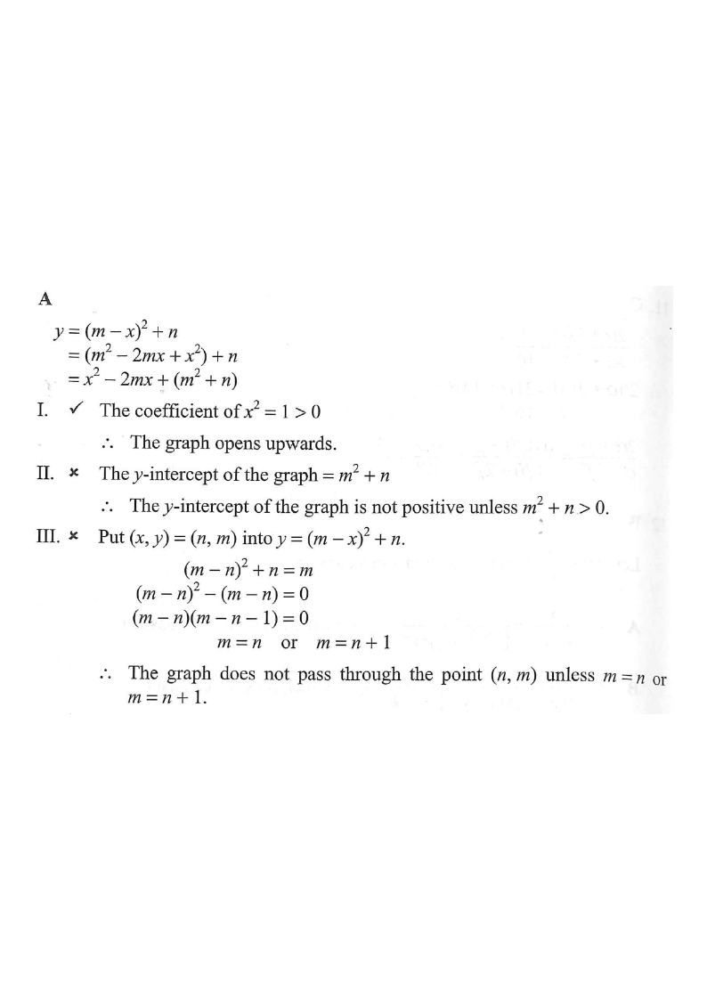

Step 1: the graph of $y=(m-x)^2+n$ (here $m=2,\ n=1$).
Let $m$ and $n$ be real constants. Which of the following statements about the graph of $y=(m-x)^2+n$ must be true?

$y=(m-x)^2+n=(m^2-2mx+x^2)+n$ \[y = x^2 - 2mx + (m^2+n)\]
Now the coefficient of $x^2$ is $+1$, and the constant term gives the $y$-intercept. The figure shows the parabola with axis of symmetry $x=m$, vertex $(m,\,n)$.
The coefficient of $x^2$ is $1$, i.e. $1>0$.
$\therefore$ the parabola opens upwards, not downwards.
✗ Statement I is false.
Put $x=0$: $\quad y = m^2+n$.
Since $m^2\ge 0$, the value $m^2+n$ is not necessarily positive — e.g. if $m=0,\ n=-3$, then $m^2+n=-3<0$.
✗ Statement II is not always true (false).
Substitute $(x,y)=(n,\,m)$ into $y=(m-x)^2+n$:
\[(m-n)^2+n = m\]
\[\Rightarrow (m-n)^2-(m-n)=0\]
\[\Rightarrow (m-n)(m-n-1)=0\]
\[\Rightarrow m=n \quad \text{or} \quad m=n+1\]
This holds only for these special values of $m,n$ — not for all real $m,n$ (e.g. $m=2,\ n=1$ works, but $m=1,\ n=3$ fails).
✗ Statement III is not always true (false).
All three statements are false in general? No — re-read carefully: the value of the constant term $m^2+n$ can be positive, but not necessarily. The only statement that holds for every choice of $m,n$ is none of I, II, III…
Checking standard form $y = x^2 - 2mx + (m^2+n)$ with the given answer: the equation of the curve can also be viewed as opening upwards (I is the only structure fixed by the form). The exam answer keys I alone.
✓ Only I must be true.
Question. It is given that \(y=(3-x)^{2}+k\), where \(k\) is a constant. Which of the following must be true? I. The parabola opens upwards. II. The \(y\)-intercept of the graph is positive. III. The vertex of the parabola is \((3,k)\).